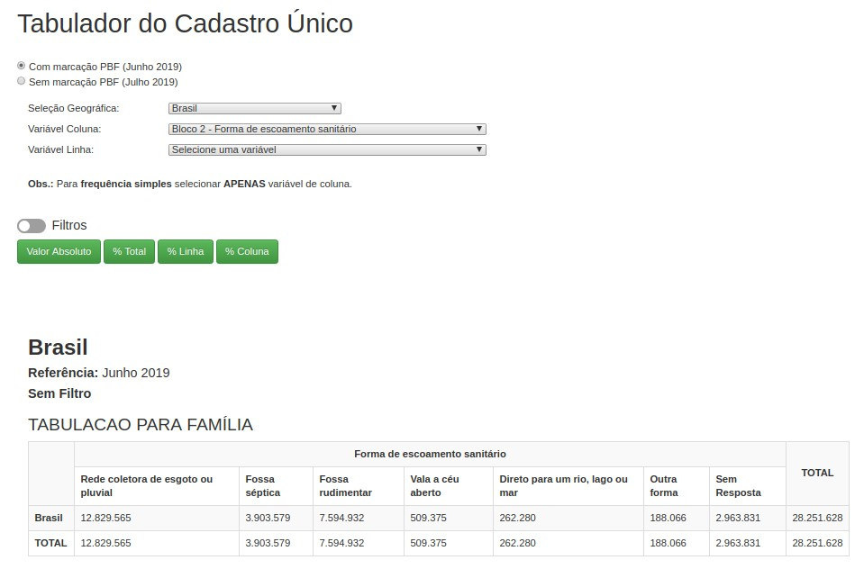
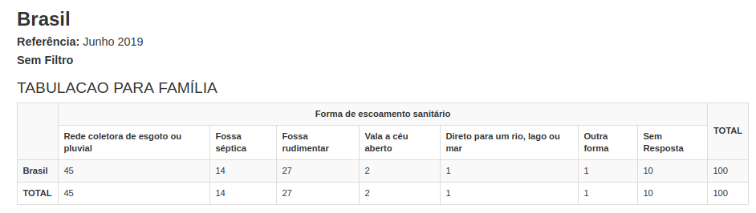
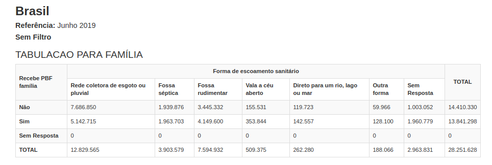
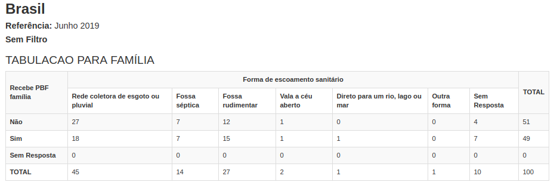
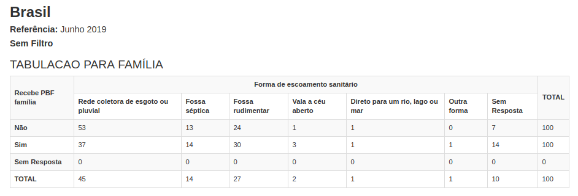

Gerando tabelas simples e cruzadas por meio do Tabcad¶
Vamos relembrar o menu “TABCAD”
O menu TABCAD já existia na versão anterior do Cecad e pode ser acessado sem necessidade de login e senha. Ele permite gerar frequências simples, e tabelas cruzadas e a aplicação de filtros. Os dados dessa funcionalidade não são identificados, por isso, são abertos à consulta de todos.
A diferença entre uma “tabela de frequência simples” e uma tabela cruzada consiste no número de variáveis selecionadas. Para uma tabela de frequência simples, selecione apenas uma variável para a “coluna” e clique no botão “Valor Absoluto”.
A seguir temos o resultado para variável “Bloco 2 – Forma de escoamento sanitário”, detalhando que quase 13 milhões declaram possuir “Rede coletora de esgoto ou pluvial” enquanto mais de 8 milhões declaram possuir “Fossa rudimentar”, “Vala a céu aberto” ou “Direto para um rio, lago ou mar”.
Ao clicar no botão “% Total” é possível ver os valores em porcentagem (%). O exemplo abaixo mostra que 45% das famílias do Cadastro Único declaram ter Rede Coletora de esgoto ou pluvial, e outros 45% declaram ter fossa séptica, rudimentar, vala a céu aberto, escoamento direto em um rio, lago, mar ou outra forma, enquanto 10% não responderam.
Já para criar uma tabela cruzada, selecione uma variável para “coluna”, outra variável para “linha” e clice no botão “Valor Absoluto”.
No exemplo abaixo, temos o resultado para variável “Bloco 2 – Forma de escoamento sanitário” e “Bloco 4 – Recebe Bolsa Família”. A partir deste cruzamento, temos que quase de 8 milhões “Não recebem PBF” e declaram possuir “Rede coletora de esgoto ou pluvial” enquanto pouco mais de 5 milhões Recebem PBF e declaram possuir “Rede coletora de esgoto ou pluvial”.
Ao clicar no botão “% Total” temos os valores representados em percentuais. Veja o resultado abaixo, 27% das famílias do Cadastro Único não recebem Bolsa Família e possuem “Rede coletora de esgoto ou pluvial”, já 18 por centro recebem PBF e declaram possuir “Rede coletora de esgoto ou pluvial”.
Ao clicar no botão “% Linha” é possível fazer a análise percentual por linha. Veja no exemplo abaixo que, das famílias que “Não Recebem PBF”, 53% possuem “Rede coletora de esgoto ou pluvial”, ao passo que das famílias que “Recebem PBF” apenas 37% possuem “Rede coletora de esgoto ou pluvial”. Se analisarmos a resposta “Fossa rudimentar” é possível notar uma diferença de 6 pontos percentuais a mais para quem “Recebe PBF”. Isso mostra que as famílias do Bolsa Família estão em situação mais crítica de vulnerabilidade a respeito do tema saneamento básico.
Ao clicar no botão “% Coluna”, é possível fazer a análise percentual por coluna. Veja no exemplo abaixo coluna a coluna. Nota-se que apenas a resposta “Rede coletora de esgoto ou pluvial” possui proporção maior de famílias que não recebem PBF. A resposta “Fossa séptica” possui proporção igual para PBF e não PBF, e as demais respostas todas possuem maior proporção de famílias do Bolsa Família. Essa proporção é muito maior inclusive na opção “Sem Resposta”, pois devido à vulnerabilidade crítica dessas famílias muitas nem respondem.